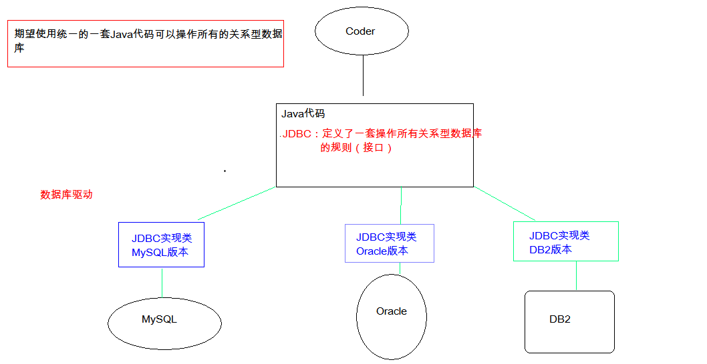
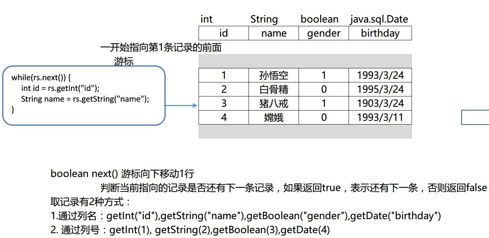

01-JDBC基础一. 今日目标二. 今日内容(一) JDBC快速入门1. JDBC概念2. 快速入门基本步骤代码实现(二) JDBC对象详解1. DriverManager作用一:注册驱动(一般不用)作用二:获取连接2. Connection作用一: 创建执行SQL语句的对象作用二: 管理事务3. Statement作用一：执行SQL练习：student表 添加一条记录student表修改记录student表 删除一条记录4. ResultSet作用:遍历结果集,获取结果集数据使用步骤5. PreparedStatementSQL注入问题解决sql注入问题：使用PreparedStatement对象来解决,预编译的SQL使用?作为占位符例如:练习：定义一个方法，查询emp表的数据将其封装为对象，然后装载集合，返回。(三) 封装jdbc工具类1. 步骤分析2. 代码实现java代码配置文件3. 案例:用户登录需求介绍数据准备代码实现编写登录方法编写测试代码(四) JDBC控制事务1. 事务概念2. 事物操作3. 管理事务4. 代码演示三. 作业练习
xJava DataBase Connectivity Java 数据库连接， Java语言操作数据库JDBC本质：其实是官方（sun公司）定义的一套操作所有关系型数据库的规则，即接口。各个数据库厂商去实现这套接口，提供数据库驱动jar包。我们可以使用这套接口（JDBC）编程，真正执行的代码是驱动jar包中的实现类。

xxxxxxxxxx1. 导入驱动jar包 mysql-connector-java-5.1.37-bin.jar* 复制mysql-connector-java-5.1.37-bin.jar到项目的libs目录下* 右键-->Add As Library2. 注册驱动3. 获取数据库连接对象 Connection4. 定义sql5. 获取执行sql语句的对象 Statement6. 执行sql，接受返回结果7. 处理结果8. 释放资源
xxxxxxxxxxpublic static void main(String[] args) throws ClassNotFoundException, SQLException { //1. 导入驱动jar包 //2.注册驱动 Class.forName("com.mysql.jdbc.Driver"); //3.获取数据库连接对象 Connection conn = DriverManager.getConnection("jdbc:mysql://localhost:3306/web02", "root", "zl"); //4.定义sql语句 String sql = "select * from student "; //5.获取执行sql的对象 Statement Statement stmt = conn.createStatement(); //6.执行sql ResultSet rs = stmt.executeQuery(sql); //7.处理结果 while(rs.next()){ System.out.println(rs.getObject("name")+" "+rs.getObject("age")); } //8.释放资源 stmt.close(); conn.close(); }| 返回值 | 方法介绍 | 方法介绍 |
|---|---|---|
| static void | registerDriver(Driver driver) | 注册驱动 |
xxxxxxxxxx使用`static void registerDriver(Driver driver) ` 可以帮我们完成驱动的注册,但是开发中我们一般都不用,因为使用这个方法就会导致驱动被注册两次.
在源码中有如下的一段代码:
xxxxxxxxxxstatic { try { DriverManager.registerDriver(new Driver()); } catch (SQLException var1) { throw new RuntimeException("Can't register driver!"); }}xxxxxxxxxx在代码中有一段静态代码块，静态代码块已经调用了注册驱动的方法。如果再手动调用该方法注册驱动，就会导致驱动被注册两次实际开发中一般会使用如下代码注册驱动
xxxxxxxxxx// 1. 注册驱动Class.forName("com.mysql.jdbc.Driver");| 返回值 | 方法介绍 | 方法介绍 |
|---|---|---|
| static Connection | getConnection(String url, String user, String password) | 获取连接 |
xxxxxxxxxx使用`static Connection getConnection(String url, String user, String password)`可以帮我们获取与数据库的连接这个方法中有三个参数：- url ：与数据库连接的路径- user ：与数据库连接的用户名- password ：与数据库连接的密码主要应该关注url的写法,例如:`jdbc:mysql://localhost:3306/web_test3`- jdbc : 连接数据库的协议(固定)- mysql : 是jdbc的子协议- localhost : 连接的MySQL数据库服务器的主机地址。（连接是本机就可以写成localhost），如果连接不是本机的，就需要写上连接主机的IP地址。- 3306 :MySQL数据库服务器的端口号- web_test3 :数据库名称
url如果连接的是本机的路径，可以简化为如下格式：jdbc:mysql:///web_test3
| 返回值 | 方法介绍 | 方法介绍 |
|---|---|---|
| Statement | createStatement() | 获取执行SQL语句的对象 |
| PreparedStatement | prepareStatement(String sql) | 预编译SQL |
| 返回值 | 方法介绍 | 方法介绍 |
|---|---|---|
| void | setAutoCommit(boolean autoCommit) | 开启事物 |
| void | commit() | 提交事务 |
| void | rollback() | 回滚事务 |
| 返回值 | 方法介绍 | 方法介绍 |
|---|---|---|
| boolean | execute(String sql) | 执行SQL语句 |
| ResultSet | executeQuery(String sql) | 执行查询(select)语句 |
| int | executeUpdate(String sql) | 执行增(insert),删(delete),改(update)语句 |
xxxxxxxxxxCREATE TABLE `student` ( `id` int(11) DEFAULT NULL, `name` varchar(20) DEFAULT NULL, `age` int(11) DEFAULT NULL, `sex` varchar(5) DEFAULT NULL, `address` varchar(100) DEFAULT NULL, `math` int(11) DEFAULT NULL, `english` int(11) DEFAULT NULL) ENGINE=InnoDB DEFAULT CHARSET=utf8;student表 添加一条记录xxxxxxxxxx/** * 添加一条数据 * @throws ClassNotFoundException * @throws SQLException */public void test1() throws ClassNotFoundException { Connection conn = null; Statement stmt = null; try { //1. 导入驱动jar包 //2.注册驱动 Class.forName("com.mysql.jdbc.Driver"); //3.获取数据库连接对象 conn = DriverManager.getConnection("jdbc:mysql://localhost:3306/web05", "root", "zl"); //4.定义sql语句 String sql = "insert into `student` values (null ,'马云',55,'男','杭州',66,78)"; //5.获取执行sql的对象 Statement stmt = conn.createStatement(); //6.执行sql int row = stmt.executeUpdate(sql); //7.处理结果 if(row>0){ System.out.println("插入成功...."); } } catch (SQLException e) { e.printStackTrace(); } finally { //8.释放资源 if(stmt!=null){ try { stmt.close(); } catch (SQLException e) { e.printStackTrace(); } stmt = null; } if(conn!=null){ try { conn.close(); } catch (SQLException e) { e.printStackTrace(); } conn = null; } }}student表修改记录xxxxxxxxxx/** * 修改一条数据 * @throws ClassNotFoundException * @throws SQLException */public void test2() throws ClassNotFoundException { Connection conn = null; Statement stmt = null; try { //1. 导入驱动jar包 //2.注册驱动 Class.forName("com.mysql.jdbc.Driver"); //3.获取数据库连接对象 conn = DriverManager.getConnection("jdbc:mysql://localhost:3306/web05", "root", "zl"); //4.定义sql语句 String sql = "update student set age = 18 ,name = '马小宝' where name = '马云'"; //5.获取执行sql的对象 Statement stmt = conn.createStatement(); //6.执行sql int row = stmt.executeUpdate(sql); //7.处理结果 if(row>0){ System.out.println("修改成功...."); } } catch (SQLException e) { e.printStackTrace(); } finally { //8.释放资源 if(stmt!=null){ try { stmt.close(); } catch (SQLException e) { e.printStackTrace(); } stmt = null; } if(conn!=null){ try { conn.close(); } catch (SQLException e) { e.printStackTrace(); } conn = null; } }}student表 删除一条记录xxxxxxxxxx/** * 删除一条数据 * @throws ClassNotFoundException * @throws SQLException */public void test3() throws ClassNotFoundException{ Connection conn = null; Statement stmt = null; try { //1. 导入驱动jar包 //2.注册驱动 Class.forName("com.mysql.jdbc.Driver"); //3.获取数据库连接对象 conn = DriverManager.getConnection("jdbc:mysql://localhost:3306/web05", "root", "zl"); //4.定义sql语句 String sql = "delete from student where name = '马小宝'"; //5.获取执行sql的对象 Statement stmt = conn.createStatement(); //6.执行sql int row = stmt.executeUpdate(sql); //7.处理结果 if(row>0){ System.out.println("删除成功...."); } } catch (SQLException e) { e.printStackTrace(); } finally { //8.释放资源 if(stmt!=null){ try { stmt.close(); } catch (SQLException e) { e.printStackTrace(); } stmt = null; } if(conn!=null){ try { conn.close(); } catch (SQLException e) { e.printStackTrace(); } conn = null; } }}ResultSet代表查询语句的结果集

| 返回值 | 方法介绍 | 方法介绍 |
|---|---|---|
| boolean | next() | 将光标从当前位置向下移一行,如果有下一行数据返回true,没有下一行数据返回false |
| int | getInt(int columnIndex) | 获取结果集中指定列的值,转化成int类型返回 |
| int | int getInt(String columnLabel) | 获取结果集中指定列的值 ,转化成int类型返回 |
| long | getLong(int columnIndex) | 获取结果集中指定索引列的值 ,转化成long类型返回 |
| long | getLong(String columnLabel) | 获取结果集中指定列名的列的值,转化成long类型返回 |
| String | getString(int columnIndex) | 获取结果集中指定索引列的值,转化成String类型返回 |
| String | getString(String columnLabel) | 获取结果集中指定列名的列的值,转化成String类型返回 |
| Object | getObject(int columnIndex) | 获取结果集中指定索引列的值,转化成Object类型返回 |
| Object | getObject(int columnLabel) | 获取结果集中指定列名的列的值,转化成Object类型返回 |
.....
xxxxxxxxxx//循环判断游标是否是最后一行末尾。while(rs.next()){ //获取数据 //6.2 获取数据 int id = rs.getInt(1); String name = rs.getString("name"); double balance = rs.getDouble(3); System.out.println(id + "---" + name + "---" + balance);}xxxxxxxxxx在拼接sql时，有一些sql的特殊关键字参与字符串的拼接。会造成安全性问题1. 输入用户随便，输入密码：`a' or 'a' = 'a`2. 使用sql拼接会将sql拼接为：`select * from user where username = 'fhdsjkf' and password = 'a' or 'a' = 'a'`
?作为占位符xxxxxxxxxx1. 导入驱动jar包 mysql-connector-java-5.1.37-bin.jar2. 注册驱动3. 获取数据库连接对象 Connection4. 定义sql* 注意：sql的参数使用？作为占位符。 如：select * from user where username = ? and password = ?;5. 获取执行sql语句的对象 PreparedStatement ps = Connection.prepareStatement(String sql)6. 给？赋值：* 方法： setXxx(参数1,参数2)* 参数1：？的位置编号 从1 开始* 参数2：？的值7. 执行sql，接受返回结果，不需要传递sql语句8. 处理结果9. 释放资源
xxxxxxxxxxpublic static boolean login2(String username,String password) throws SQLException { //1. 获取连接 Connection connection = JdbcUtils.getConnection(); //2. 定义sql语句 String sql = "select * from user where username = ? and password = ? "; //3. 预编译sql,获取执行sql语句的对象 PreparedStatement ps = connection.prepareStatement(sql); //4. 设置参数的值 ps.setString(1,username); ps.setString(2,password); //5. 执行sql语句 ResultSet rs = ps.executeQuery(sql); return rs.next();}xxxxxxxxxx注意：后期都会使用PreparedStatement来完成增删改查的所有操作1. 可以防止SQL注入2. 效率更高
Emp类xxxxxxxxxx/** * CREATE TABLE emp ( * id INT PRIMARY KEY AUTO_INCREMENT, * NAME VARCHAR(10), * gender CHAR(1), -- 性别 * salary DOUBLE, -- 工资 * join_date DATE, -- 入职日期 * dept_id INT, * FOREIGN KEY (dept_id) REFERENCES dept(id) -- 外键，关联部门表(部门表的主键) * ); * * 创建员工表对应的实体类 */public class Emp { private int id; private String name ; private String gender; private double salary ; private Date join_date ; private int dept_id ; public int getId() { return id; } public void setId(int id) { this.id = id; } public String getName() { return name; } public void setName(String name) { this.name = name; } public String getGender() { return gender; } public void setGender(String gender) { this.gender = gender; } public double getSalary() { return salary; } public void setSalary(double salary) { this.salary = salary; } public Date getJoin_date() { return join_date; } public void setJoin_date(Date join_date) { this.join_date = join_date; } public int getDept_id() { return dept_id; } public void setDept_id(int dept_id) { this.dept_id = dept_id; }}public List<Emp> findAll(){}xxxxxxxxxx/** * 查询所有员工信息 * @return */public List<Emp> listAll() throws ClassNotFoundException { return null;}xxxxxxxxxx/** * 查询所有员工信息 * @return */public List<Emp> listAll() throws ClassNotFoundException { Connection conn = null; Statement stmt = null; ResultSet rs = null; try { //1. 导入驱动jar包 //2.注册驱动 Class.forName("com.mysql.jdbc.Driver"); //3.获取数据库连接对象 conn = DriverManager.getConnection("jdbc:mysql://localhost:3306/web05", "root", "zl"); //4.定义sql语句 String sql = "select * from emp "; //5.获取执行sql的对象 Statement stmt = conn.createStatement(); //6.执行sql rs = stmt.executeQuery(sql); //7.处理结果 //7.1 定义集合封装多条emp数据 List<Emp> emps = new ArrayList<Emp>(); while(rs.next()){ //定义员工对象 Emp emp = new Emp(); // 将每一条数据封装到一个员工对象中 emp.setId(rs.getInt("id")); emp.setDept_id(rs.getInt("dept_id")); emp.setGender(rs.getString("gender")); emp.setJoin_date(rs.getDate("join_date")); emp.setName(rs.getString("name")); emp.setSalary(rs.getDouble("salary")); // 将封装的员工对象,添加到List集合中 emps.add(emp); } return emps; } catch (SQLException e) { e.printStackTrace(); } finally { //8.释放资源 if(rs!=null){ try { rs.close(); } catch (SQLException e) { e.printStackTrace(); } rs = null; } if(stmt!=null){ try { stmt.close(); } catch (SQLException e) { e.printStackTrace(); } stmt = null; } if(conn!=null){ try { conn.close(); } catch (SQLException e) { e.printStackTrace(); } conn = null; } } return null;}xxxxxxxxxxpublic void test1() throws ClassNotFoundException { List<Emp> emps = listAll(); System.out.println(emps);}目的：简化书写,实现代码复用
xxxxxxxxxx1. 将注册驱动,获取连接,释放资源的操作抽取到一个工具类中2. 获取连接的方法中,为了保证工具的通用性,后期修改方便,可以使用配置文件提取我们的数据库连接信息`jdbc.properties`3. 抽取一个方法释放资源
xxxxxxxxxxpackage com.itheima.utils;import java.io.FileReader;import java.io.IOException;import java.net.URL;import java.sql.*;import java.util.Properties;public class JdbcUtils { private static String url; private static String user; private static String password; private static String driver; /** * 文件的读取，只需要读取一次即可拿到这些值。使用静态代码块 */ static { //读取资源文件，获取值。 try { //1. 创建Properties集合类。 Properties pro = new Properties(); //获取src路径下的文件的方式--->ClassLoader 类加载器 ClassLoader classLoader = JdbcUtils.class.getClassLoader(); URL res = classLoader.getResource("jdbc.properties"); String path = res.getPath(); System.out.println(path);///D:/IdeaProjects/itcast/out/production/day04_jdbc/jdbc.properties //2. 加载文件 pro.load(new FileReader(path)); //3. 获取数据，赋值 url = pro.getProperty("url"); user = pro.getProperty("user"); password = pro.getProperty("password"); driver = pro.getProperty("driver"); //4. 注册驱动 Class.forName(driver); } catch (IOException e) { e.printStackTrace(); } catch (ClassNotFoundException e) { e.printStackTrace(); } } /** * 获取连接 * * @return 连接对象 */ public static Connection getConnection() throws SQLException { return DriverManager.getConnection(url, user, password); } /** * 释放资源 * @param stmt * @param conn */ public static void close(Statement stmt, Connection conn) { if (stmt != null) { try { stmt.close(); } catch (SQLException e) { e.printStackTrace(); } } if (conn != null) { try { conn.close(); } catch (SQLException e) { e.printStackTrace(); } } } /** * 释放资源 * * @param stmt * @param conn */ public static void close(ResultSet rs, Statement stmt, Connection conn) { if (rs != null) { try { rs.close(); } catch (SQLException e) { e.printStackTrace(); } } if (stmt != null) { try { stmt.close(); } catch (SQLException e) { e.printStackTrace(); } } if (conn != null) { try { conn.close(); } catch (SQLException e) { e.printStackTrace(); } } }}jdbc.properties
xxxxxxxxxxdriver=com.mysql.jdbc.Driverurl=jdbc:mysql:///web05user=rootpassword=zl
xxxxxxxxxx1. 通过键盘录入用户名和密码2. 判断用户是否登录成功* select * from user where username = "" and password = "";* 如果这个sql有查询结果，则成功，反之，则失败
xxxxxxxxxxCREATE TABLE USER( id INT PRIMARY KEY AUTO_INCREMENT, username VARCHAR(32), PASSWORD VARCHAR(32));INSERT INTO USER VALUES(NULL,'zhangsan','123');INSERT INTO USER VALUES(NULL,'lisi','234');xxxxxxxxxxpublic static boolean login(String username,String password) throws SQLException { //1. 获取连接 Connection connection = JdbcUtils.getConnection(); //2. 获取执行sql语句的对象 Statement st = connection.createStatement(); //3. 定义sql语句 String sql = "select * from user where username = '"+username+"' and password = '"+password +"'"; //4. 执行sql语句 ResultSet rs = st.executeQuery(); return rs.next();}xxxxxxxxxxpublic static void main(String[] args) throws SQLException { Scanner scanner = new Scanner(System.in); System.out.println("请输入用户名:"); String username = scanner.nextLine(); System.out.println("请输入密码:"); String password = scanner.nextLine(); boolean result = login(username, password); if(result){ System.out.println("登录成功"); }else{ System.out.println("登录失败"); }}xxxxxxxxxx一个包含多个步骤的业务操作。如果这个业务操作被事务管理，则这多个步骤要么同时成功，要么同时失败。
xxxxxxxxxx1. 开启事务2. 提交事务3. 回滚事务
xxxxxxxxxx1. 开启事务：`setAutoCommit(boolean autoCommit)`- 在执行sql之前开启事务 ,true关闭 false开启2. 提交事务：`commit()`- 当所有sql都执行完提交事务3. 回滚事务：`rollback()`- 在catch中回滚事务
xxxxxxxxxxpublic static void main(String[] args) { Connection conn = null; PreparedStatement pstmt1 = null; PreparedStatement pstmt2 = null; try { //1.获取连接 conn = JdbcUtils.getConnection(); //开启事务 conn.setAutoCommit(false); //2.定义sql //2.1 张三 - 500 String sql1 = "update account set balance = balance - ? where id = ?"; //2.2 李四 + 500 String sql2 = "update account set balance = balance + ? where id = ?"; //3.获取执行sql对象 pstmt1 = conn.prepareStatement(sql1); pstmt2 = conn.prepareStatement(sql2); //4. 设置参数 pstmt1.setDouble(1,500); pstmt1.setInt(2,1); pstmt2.setDouble(1,500); pstmt2.setInt(2,2); //5.执行sql pstmt1.executeUpdate(); // 手动制造异常 int i = 3/0; pstmt2.executeUpdate(); //提交事务 conn.commit(); } catch (Exception e) { //事务回滚 try { if(conn != null) { conn.rollback(); } } catch (SQLException e1) { e1.printStackTrace(); } e.printStackTrace(); }finally { JdbcUtils.close(pstmt1, conn); JdbcUtils.close(pstmt2,null); }}
xxxxxxxxxxCREATE TABLE `tab_user` ( `uid` int(11) NOT NULL PRIMARY KEY AUTO_INCREMENT, `username` varchar(100) NOT NULL, `password` varchar(32) NOT NULL, `name` varchar(100) , `birthday` date , `sex` char(1) , `telephone` varchar(11) , `email` varchar(100) , `balance` double ) ;INSERT INTO `tab_user` VALUES ('1', 'aaaa', '123', '李逵', '2000-01-01', '男', '11111111', 'aaa@qq.com', 10000);INSERT INTO `tab_user` VALUES ('4', 'aaaaa', '123', '李逵', '2000-01-01', '男', '11111111', 'aaa@qq.com', 10000);INSERT INTO `tab_user` VALUES ('5', 'aaaaaa', '123', '李逵', '2000-01-01', '男', '11111111', 'wanglei@itcast.cn', 10000);INSERT INTO `tab_user` VALUES ('6', 'bbbbbbbbbb', 'bbbbbbbbbbb', '王磊', '2018-10-23', '男', '15910101111', 'wanglei@itcast.cn', 10000);1. 封装一个查询所有用户信息的方法
xxxxxxxxxxpublic List<User> findAll();2. 封装一个根据用户id查询用户详情的方法
xxxxxxxxxxpublic User findById(int id);3. 封装一个添加用户的方法
xxxxxxxxxxpublic void add(User user);4. 封装一个根据用户名和密码查询用户的方法
xxxxxxxxxxpublic User login(String username,String password);5. 封装一个转账的方法,传入转出账户id和转入账户id以及金额,完成转账功能
xxxxxxxxxxpublic boolean transfer(int source,int target,double money);